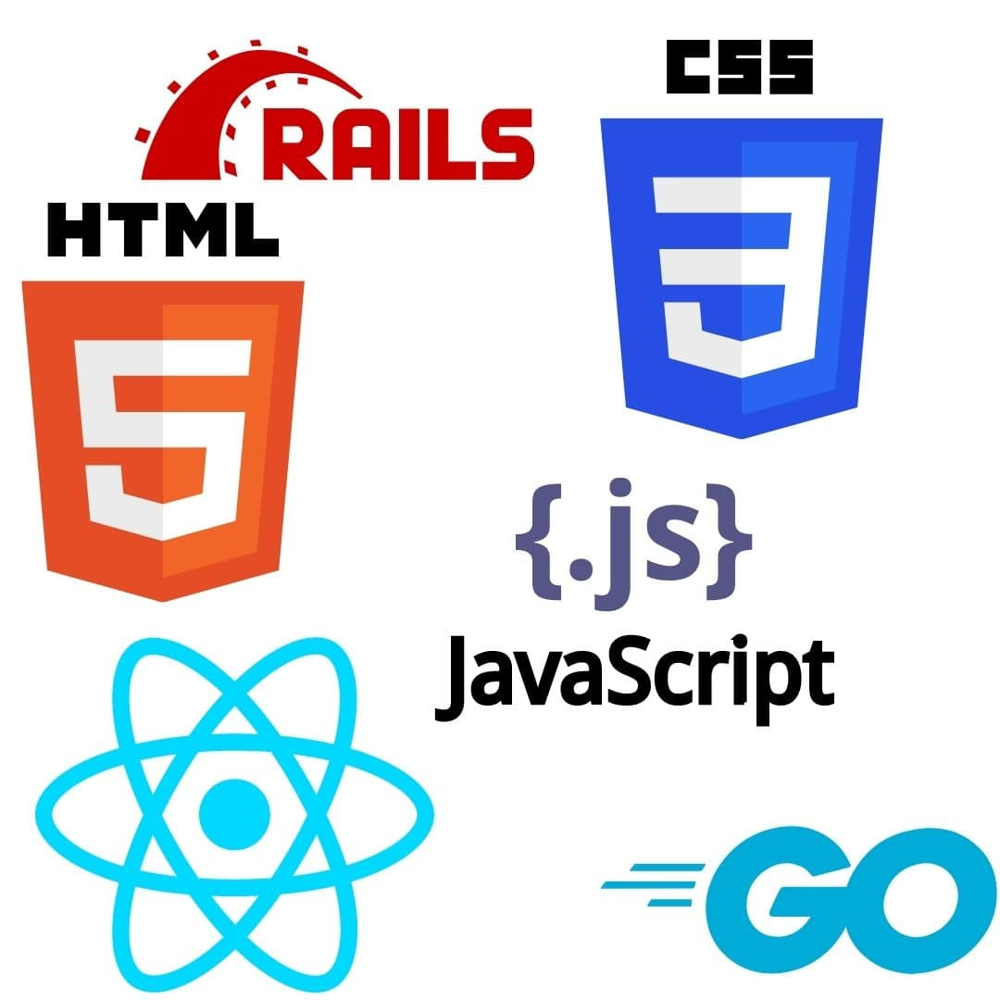
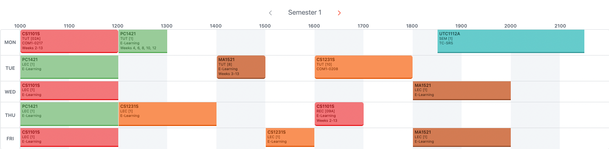
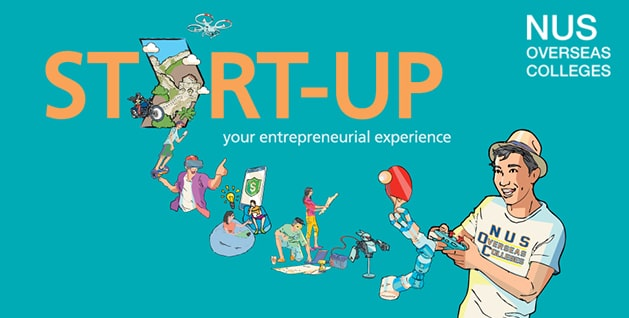

NUS Computer Science: Everything to Expect
Guide for incoming Computer Science freshmen


Introduction
NUS Computer Science (CS) is undoubtedly one of the most competitive and challenging courses in NUS. Coming in at 4th place in the world QS ranking, this course boasts a rigorous curriculum, covering both depth and breadth. In this article, I will be sharing more about what NUS CS is all about - difficulty, workload, expectations, specialisation and more. This is in hopes that prospective students will be more informed of what is to come. I also hope to share more about how to prepare for Computer Science and concrete plans to take while waiting for university to begin.
Content Page
Difficulty
The difficulty in CS is, for a lack of a better word, high. In Year 1 Semester 1, I was caught off guard at the pace at which lectures and tutorials went. Lag behind for a week and expect to play the catch-up game for a long time with much stress and many caffeinated late nights. To stay on top of your work, you need to be a self-directed learner, plan your schedule well and study consistently.
The workload is definitely much more than most other courses. Often, I see many of my friends actively participating in various Interest Groups (IGs) while I struggle to complete tutorials on time. Of course, this might just be because of my poor time management. However, I do suggest that you have a taste of what the sem workload is like before joining a high commitment CCA.
Grade Expectations

Self explanatory meme
Regarding grades, it's time to lower your expectations to avoid disappointment. As with most national level examinations, grading is based on a bell shaped curve. For a rough estimate, the A- to A+ grade goes to the top 20 - 25% of the students. Naturally, the bulk of the students will fall between the B- to B+ range. Considering your competition to be the top A level, IB, NUS High, Polytechnic students and insanely smart international students, it is very challenging to rank in that A range.
So do adjust your expectations, it is normal not to score as well as compared to JC or poly. I also believe that grades aren't especially crucial for CS students. Grades do not define your employability and worth as a person. Hiring managers, at least in the tech scene, look out for students who have meaningful software/ side projects that can showcase their talents and experiences from hackathons and internships.
On the flip side, there are opportunities provided by NUS, such as the Student Exchange Program (SEP) and NUS Overseas College (NOC), that takes your grades or CAP (Cumulative Point Average) into consideration. My advice is to study hard and try your best to get good grades, but definitely don’t beat yourself up if you can’t get A for every module. Pace yourself well and make time for other activities. Don’t stay cooped up in your room studying everyday! It is not worth it!
Specialisation
Moving on to the more technical aspect on the course, choosing your specialisation. Unlike the CHS (Combined Humanities and Science) students, CS students do not have majors. We use the concept of focus areas and you can have multiple focus areas just as long as you complete 3 modules from the Area Primaries, with at least one module at level-4000 or above. Here are the 10 focus areas that are offered in NUS:
Focus Areas
- Algorithms & Theory
- Artificial Intelligence
- Computer Graphics and Games
- Computer Security
- Database Systems
- Multimedia Information Retrieval
- Networking and Distributed Systems
- Parallel Computing
- Programming Languages
- Software Engineering
It is alright if you are unsure what these specialisations mean even after reading about them. You will get a better grasp of what is to come when school starts. You can declare your specialisation as early as Year 1 but it is not necessary. You have until the end of Year 2 to finalise this decision.
How Should I Prepare?
Harvard CS50 and Udemy
In your first semester, there will only be 1 coding-related module called CS1101S Programming Methodology. For CS1101S, there is no coding prerequisite. The module will teach you everything you need to know to do well. It focuses mainly on functional programming. NUS Computing created its own language called Source, based on JavaScript, for this module. Learning syntax isn't the most important thing. The module focuses more on computational thinking - about how the computer runs based on the code.
Of course, I highly recommend you to take an online introductory course about programming as it will be very useful. It will help smoothen the learning curve and save you much time during the semester. Some resources include Harvard's CS50 course on edX or a JavaScript Udemy course. Click here if you are interested to know more about CS1101S.
As we all know, CS isn't all about coding. Other subjects like Linear Algebra, Discrete Mathematics and Calculus are core modules for your first year. You can also read up about these in your free time. Refer to the other core modules here.

Frontend and Backend Languages
However, what I would recommend instead of catching up on Mathematics, is to pick up a tech stack. You can start with HTML, CSS and JavaScript and slowly make your way to create a static website or a blog! Once you are more comfortable with these languages, you have the foundation to learn React, a very popular frontend language that tech companies use. Pair this skill up with a backend language such as Go, Ruby on Rails or NodeJS (MERN tech stack) and you are a full stack developer! This will give you a huge advantage when applying for internships or during hackathons.
What to expect in the first Semester
Orientation
2021 Social Night Poster from Instagram
This goes without saying but you will kick off your first semester with Orientation. Despite not being able to have in person orientation because of the Covid-19 pandemic, you should still sign up for it. It is usually 2 days of online activities and most people still enjoyed it, so I am sure you will too. Other freshman activities include Rag & Flag and Pageant/ Social Night, give them a shot too if you can. Another great way to make new friends is through staying in student accommodations, such as Halls and Residential Colleges. Immerse yourself in their culture and join a couple of Interest Groups. I am sure you will find a place where you will belong.
I believe it is very important to make friends now, especially through these avenues, because these friends will be the ones who make your university journey memorable and something to look back on in the future. It would be harder to make friends once these events are over, since most tutorials and lectures are conducted online via Zoom. An added benefit is that you can collaborate and study together, especially when you are stuck on a problem set. Sharing thought processes and learning from others’ is a great way to study and improve academically.
Module Registration
A brief introduction about the Modular Credit (MC) system - on average each module is 4 MCs and you will need to clear 160 MCs by the end of your 4 years in NUS. This balances out to 20 MCs per semester (sem) over 8 semesters, which equals to 5 modules per sem. Everyone has their own way of planning their modules, some prefer evenly splitting the modules across the semesters while others rather overload in the earlier few semesters to free up their year 3 or 4 semesters.
It is up to you to navigate this module planning and I suggest testing the waters first before planning so for the next 3 years. Use the first year as a litmus test to see if you can manage 5 modules per sem and don’t be pressured by others to take on more modules if you cannot cope with the workload.

My timetable on NUSMODS
In Year 1 Sem 1 (Y1S1), most of your core modules are pre-allocated to you. The most prominent 2 modules are CS1101S - Programming Methodology and CS1231S - Discrete Mathematics. Either MA1521 - Calculus for Computing or MA2001 - Linear Algebra will also be preallocated. This leaves you with 2 more modules to pick for in Y1S1. NUSMODS has a description of all the modules available and some even have reviews of the mods by previous students. NUSMODS is also used to plan your timetable. Alternatively, NUS has provided a suggested pathway of modules to take, based on specialisation area.
I would recommend finding at least 1 chill module to take every sem, so that you are not too overwhelmed. Modules that have lighter workloads are usually General Elective (GE) mods. Do also take note of the modules that have prerequisites and preclusions. You must have completed the prerequisite mods before taking that particular mod or if you have done a preclusion of the mod, you cannot take that particular mod.
Module Registration is done on Edurec. You can’t login until you have fully matriculated into NUS. How the module allocation works is through a mix of balloting and priority ranking. Year 4 students have the highest priority and the priority decreases with each year, with year 1s having the least priority. Worry not, most year 4 students will not be bidding for year 1 taken by year 1s. Once all the spots have been cleared from the priority round, the remaining spots will be balloted.
Satisfactory/Unsatisfactory (S/U)
At the end of every semester, students can now exercise S/U options on eligible modules read in the current semester, and those read in the preceding semesters in the same Academic Year. This means that you can S/U mods from sem 1 during sem 2. Eligible modules are those that have no prerequisites. In year 1, we can use 32 MC to S/U which is about 8 mods but you can only carry over 12 MC after the first year. As such, if you want to maximise your S/U MCs, you should only utilise up to 20 S/U MCs in year 1.
By exercising this S/U option, the grade of that particular module is no longer counted in your CAP. In essence if you pass the module with a ‘D’ grade, you will receive a ‘S’ grade instead and that mod is voided from your CAP. However, if you fail the module with a ‘F’ grade, you will receive a ‘U’ grade as the replacement and you would still need to retake the module.
The usual standard is to S/U grades that are B and below. The dilemma comes when deciding to S/U the B+ grade. We will cover the S/U strategies in another article.
Opportunities
In the School of Computing (SoC), there are many opportunities for self-development. One such example is Orbital, also known as CP2106 - Independent Software Development Project. It is a 4 MC module, done in pairs, and taken during Summer Break of the first year. As per the orbital website, this programme gives students the opportunity to pick up software development skills on their own. SoC provides the Orbital framework for helping students stay motivated and driven to complete a project of their own design, by structuring peer evaluation, critique and presentation milestones over the summer period. This is where your full stack knowledge will come in very handy! Check out the projects done by students of SoC to get a taste of what is to come for Orbital.
CVWO stands for Computing for Voluntary Welfare Organisations and it is a 3 months full time summer internship programme. It builds your web development and software engineering skills while contributing back to the community. As this is a paid internship, there is an application which consists of a winter assignment project and an interview. The tech stack that is mainly used is React for frontend and Go or Ruby as the backend.

Taken from NOC website
NOC (NUS Overseas College) is specially curated for aspiring entrepreneurs. It is a programme where students travel overseas and intern in a startup while studying at the host country’s university. With more than 15 locations around the world, NOC provides students another platform to develop their skills, learn about entrepreneurship and start up their own business. Some of the locations include Silicon Valley, Beijing, New York, Israel and many more. Check out their website for more information.
Lastly, there is a plethora of internship opportunities and hackathons sent to you via your NUS email. At first glance they might seem like spam, but do take the time to look through them. These will all help you build your portfolio that makes you a more attractive hire in the future.
Conclusion
What better way to find out more about SoC than through the words of seniors themselves. Watch this video by Dargoyaki, where he interviews students on their thoughts of SoC.
Well, this about sums up what to expect for the first semester of NUS Computer Science. This goes without saying studying CS is no simple feat. It requires a lot of problem solving, perseverance and continuing through the failure. Hope to see you around school!